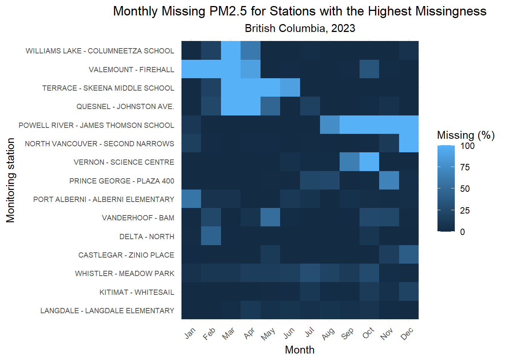
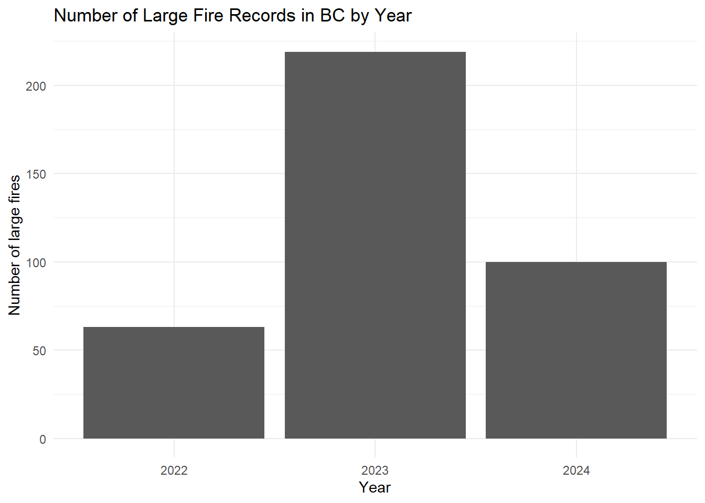
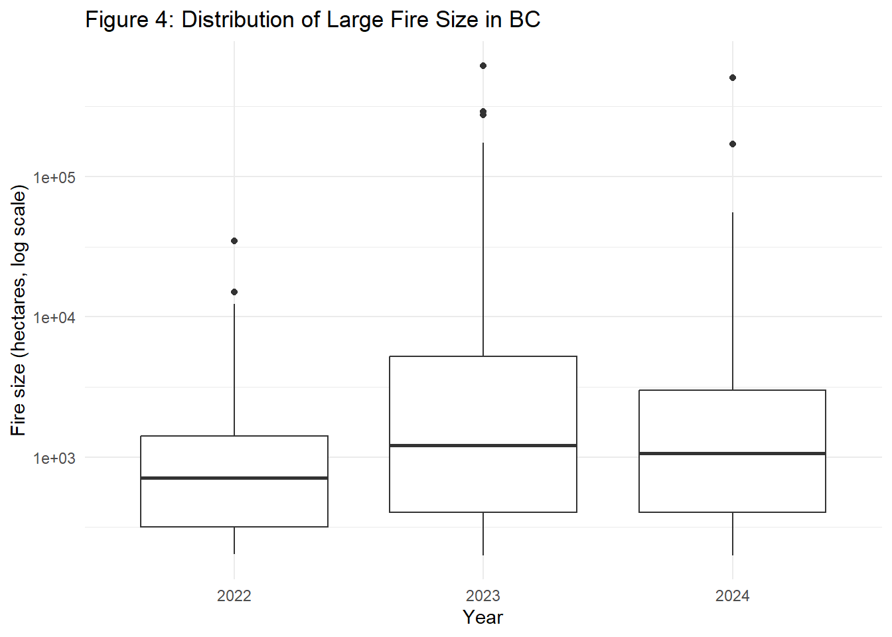

Code
library(tidyverse)library(tidyverse)The hourly PM2.5 observations wer obtained from the National Air Pollution Surveillance (NAPS) Program (Environment and Climate Change Canada 2026).
pm25_2023 <- read_csv("data/raw/airquality/2023/data_2023.csv")
stations_2023 <- read_csv("data/raw/airquality/2023/stations_2023.csv")
n_distinct(pm25_2023$NAPS_ID) # monitoring stationsdata_2023.csv:
Data has 481800 hourly PM2.5 observations across BC for 2023 (8 columns). Each row shows one PM2.5 concentration measurement, one monitoring station, one date, start, and end time.
* Important: NAPS_ID -> can connect to stations_2023.csv
stations_2023.csv:
Observations are recorded by 55 monitoring stations.
Useful fields out of 43:
Particulate Matter (PM) is a complex mix of solids and aerosols. PM2.5 describes the fine particulate matter that are 2.5 microns or less in diameter (PM2.5).
Ambient Air Quality Standard in BC:
24-Hour Average: 25 µg/m^3
Annual: 8 µg/m^3 (Government of British Columbia 2026)
# check that the number and IDs of monitoring stations match
nrow(stations_2023)
n_distinct(stations_2023$NAPS_ID)
anti_join(
pm25_2023 |> distinct(NAPS_ID),
stations_2023 |> distinct(NAPS_ID),
by = "NAPS_ID"
)station_info_2023 <- stations_2023 |>
select(
NAPS_ID,
Station_Name,
City,
Latitude,
Longitude,
Elevation_m,
Site_Type,
Urbanization,
Land_Use,
AQMS_Airzone
)
glimpse(station_info_2023)pm25_2023_joined <- pm25_2023 |>
left_join(station_info_2023, by = "NAPS_ID")
glimpse(pm25_2023_joined) # result should have 10+8-1=17 columnspm25_2023_joined |>
summarise(
total_rows = n(),
missing_concentration = sum(is.na(Concentration)),
percent_missing = mean(is.na(Concentration)) * 100
)27,784 rows missing concentration (5.77%)
summary(pm25_2023_joined$Concentration) Min. 1st Qu. Median Mean 3rd Qu. Max. NAs
0.000 2.000 5.000 7.321 8.000 2112.000 27784 Max of 2112 is very big compared to others.
pm25_2023_joined |>
filter(!is.na(Concentration)) |>
arrange(desc(Concentration)) |>
select(
Date_yyyy_mm_dd,
Start_Time_Local_Standard,
Concentration,
Station_Name,
City,
NAPS_ID
) |>
slice_head(n = 20)pm25_2023_joined |>
summarise(
zero = sum(Concentration == 0, na.rm=TRUE),
negative = sum(Concentration < 0, na.rm=TRUE),
above_100 = sum(Concentration > 100, na.rm=TRUE),
above_500 = sum(Concentration > 500, na.rm=TRUE),
above_1000 = sum(Concentration > 1000, na.rm=TRUE)
)Here, though 2112 is an extreme value, the surrounding observations show sustained high concentrations at the same station over consecutive hours. Therefore, it should not be removed as an erroneous outlier. Note: Fort St. John Max PM2.5 - 2112 and Kamloops Max PM2.5 - 982.
pm25_2023_joined |>
count(Pollutant)
pm25_2023_joined |>
count(Units)Units have 27,784 missing values and 454,016 rows as µg/m^3 while Pollutant is constant Note: 27,784 rows of Units = 27,784 rows of Concentration are N/A
pm25_2023_joined |>
summarise(
mismatched_missing = sum(is.na(Concentration) != is.na(Units))
)Result of 0 verifies that NAPS leaves Units blank when PM2.5 is missing.
pm25_2023_joined |>
group_by(NAPS_ID, Station_Name) |>
summarise(
observations = n(),
missing = sum(is.na(Concentration)),
percent_missing = mean(is.na(Concentration)) * 100
) |>
arrange(desc(percent_missing))Quite high for few ie. Powell River… has 40.8% missing, and the total missing is 5.77%. A station like Powell River might distort station specific analyses.
Using a heat map, check whether missing is a random hourly equipment gaps throughout year (less concerning) or an entire month worth of data is missing (concerning).
Figure 1: Missing PM2.5 Measurements by Station and Month
Stations have missingness in subsequent months. Thus, it is not just random hourly equipment gaps. For example, Powell River Station has a high concentration of missing values from August to December.
# separate month from date and calculate percent missing
pm25_missing_monthly <- pm25_2023_joined |>
mutate(Month = lubridate::month(Date_yyyy_mm_dd, label = TRUE)) |>
group_by(Station_Name, Month) |>
summarise(
percent_missing = mean(is.na(Concentration)) * 100,
.groups = "drop"
)# showing only the top
top_missing_stations <- pm25_2023_joined |>
group_by(Station_Name) |>
summarise(
percent_missing = mean(is.na(Concentration)) * 100,
.groups = "drop"
) |>
arrange(desc(percent_missing)) |>
slice_head(n = 15) |>
pull(Station_Name)
pm25_missing_monthly_top <- pm25_missing_monthly |> filter(Station_Name %in% top_missing_stations)
pm25_missing_monthly_top_plot <- pm25_missing_monthly_top |>
ggplot(aes(
x = Month,
y = fct_reorder(Station_Name, percent_missing, .fun = max),
fill = percent_missing
)) +
geom_tile() +
labs(
title = "Monthly Missing PM2.5 for Stations with the Highest Missingness",
subtitle = "British Columbia, 2023",
x = "Month",
y = "Monitoring station",
fill = "Missing (%)"
) +
theme_minimal() +
theme(
axis.text.x = element_text(angle = 45, hjust = 1, size = 8),
axis.text.y = element_text(size = 7),
plot.title = element_text(hjust = 0.5),
plot.subtitle = element_text(hjust = 0.5))
pm25_missing_monthly_top_plot
The wildfire data were obtained from the Candian National Fire Database (CNFDB) (Canadian Forest Service 2026). This dataset contains vegetation fire records and only provides data on “large fires” of at least 200 hectares.
large_fires <- read_csv("data/raw/wildfire/NFDB_point_large_fires.txt")
glimpse(large_fires)
problems(large_fires)
# fix wrong predetermined type
large_fires <- read_csv(
"data/raw/wildfire/NFDB_point_large_fires.txt",
col_types = cols(ATTK_DATE = col_datetime()))
problems(large_fires)
#| output
head(large_fires)# large fires in BC during 2022-2024
large_fires |> count(SRC_AGENCY, sort=TRUE)
large_fires_bc <- large_fires |>
filter(SRC_AGENCY == "BC", YEAR %in% 2022:2024)
glimpse(large_fires_bc)Total BC Large Fires (1950-2025): 3209
Total BC Large Fires (2022-2024): 382
large_fires_bc |>
select(REP_DATE) |>
arrange(REP_DATE) |>
head()# A tibble: 6 × 1
REP_DATE
<dttm>
1 2022-05-31 00:00:00
2 2022-06-03 00:00:00
3 2022-06-16 00:00:00
4 2022-06-23 00:00:00
5 2022-06-23 00:00:00
6 2022-06-28 00:00:00large_fires_bc |>
count(YEAR)# A tibble: 3 × 2
YEAR n
<dbl> <int>
1 2022 63
2 2023 219
3 2024 100large_fires_bc |>
count(FIRE_TYPE, sort=TRUE)# A tibble: 1 × 2
FIRE_TYPE n
<chr> <int>
1 Fire 382large_fires_bc |>
count(CAUSE22, sort=TRUE)# A tibble: 3 × 2
CAUSE22 n
<chr> <int>
1 N 335
2 H 36
3 U 11REP_DATE arrangement shows that the first observation of wildfire in BC (2022-2024) starts on May 31st, 2022.
Year shows 2023 has the greatest amount of fires.
FIRE_TYPE does not provide useful information for BC data.
From the NFDB_point_metadata.pdf, CAUSE:
[N] Natural/Lightning caused
[H] Human caused
[U] Unknown cause
* Remember to change these for processed data
Figure 2: Large fires by year
From BC large fires by year 2022-2024, 2023 had a much more fires than in other two years. 2023 was also the year when the extreme values of PM2.5 appeared.
large_fires_bc |>
count(YEAR) |>
ggplot(aes(x = factor(YEAR), y = n)) +
geom_col() +
labs(
title = "Number of Large Fire Records in BC by Year",
x = "Year",
y = "Number of large fires"
) +
theme_minimal()
large_fires_bc |>
summarise(
fires = n(),
missing_latitude = sum(is.na(LATITUDE)),
missing_longitude = sum(is.na(LONGITUDE)),
missing_date = sum(is.na(REP_DATE)),
missing_size = sum(is.na(SIZE_HA))
)# A tibble: 1 × 5
fires missing_latitude missing_longitude missing_date missing_size
<int> <int> <int> <int> <int>
1 382 0 0 0 0Missing values of 0 is great as latitude, longitude, rep_date, size_ha will be useful in calculating distances between fire and the station.
large_fires_bc |>
count(PRESCRIBED, sort=TRUE)# A tibble: 1 × 2
PRESCRIBED n
<chr> <int>
1 <NA> 382large_fires_bc |>
count(MORE_INFO, sort=TRUE)# A tibble: 281 × 2
MORE_INFO n
<chr> <int>
1 <NA> 101
2 Skudamore Creek 2
3 0.5 km N Davis Lake - MODIFIED RESPONSE 1
4 0.8 KM S Oppy Lake - MODIFIED RESPONSE 1
5 1 Mile SW of the Turnagain & Kachinka Confurance 1
6 1.1km NW of Elbow Lake 1
7 1.5 KM NE of Lonesome Lake 1
8 1.5 km N of Nadina River 1
9 1.5 km NE of Taltapin Lake 1
10 1.5km SE of Gatcho Lake 1
# ℹ 271 more rowslarge_fires_bc |>
count(RESPONSE, sort = TRUE)# A tibble: 4 × 2
RESPONSE n
<chr> <int>
1 FUL 142
2 MOD 115
3 MON 102
4 <NA> 23We can see that PRESCRIBED gives non-usable information for BC records. MORE_INFO shows description of location having 281 different values. RESPONSE (from NFDB_points_metadata.pdf) has three classes: [FUL] Full response, [MOD] Modified response, [MON] Monitor.
large_fires_bc |>
summarise(
min_size_ha = min(SIZE_HA),
median_size_ha = median(SIZE_HA),
mean_size_ha = mean(SIZE_HA),
max_size_ha = max(SIZE_HA)
)# A tibble: 1 × 4
min_size_ha median_size_ha mean_size_ha max_size_ha
<dbl> <dbl> <dbl> <dbl>
1 200 1027. 10550. 619072.| Year | Number of Fires | Minimum Size(ha) | Median Size(ha) | Mean Size(ha) | Maximum Size(ha) |
|---|---|---|---|---|---|
| 2022 | 63 | 203 | 713.0 | 2054.2 | 34753.0 |
| 2023 | 219 | 200 | 1217.1 | 12921.4 | 619072.5 |
| 2024 | 100 | 200 | 1066.8 | 10707.3 | 508453.3 |
Figure 4: Wildfire Sizes Box Plot by Year
Table and a box plot. With median of 1027 and mean size of 10550, we can understand that it is strongly right-skewed.
large_fires_bc |>
ggplot(aes(
x = factor(YEAR),
y = SIZE_HA
)) +
geom_boxplot() +
scale_y_log10() +
labs(
title = "Figure 4: Distribution of Large Fire Size in BC",
x = "Year",
y = "Fire size (hectares, log scale)"
) +
theme_minimal()
The logarithmic scaling is useful when there are both very large and very small values, squishing the large ones and spacing the small ones.
Summary of Data: 382 BC large vegetation fire records (\(\geq\) 200ha) from the Canadian National Fire Database for 2022-2024
Repeating what was done for 2023 is tedious and unnecessary.
First, load.
pm25_2022 <- read_csv("data/raw/airquality/2022/data_2022.csv")
stations_2022 <- read_csv("data/raw/airquality/2022/stations_2022.csv")
pm25_2024 <- read_csv("data/raw/airquality/2024/data_2024.csv")
stations_2024 <- read_csv("data/raw/airquality/2024/stations_2024.csv")Second, check if the column names are same.
identical(names(pm25_2022), names(pm25_2023))[1] TRUEidentical(names(pm25_2023), names(pm25_2024))[1] TRUEidentical(names(stations_2022), names(stations_2023))[1] TRUEidentical(names(stations_2023), names(stations_2024))[1] TRUEThird, all three years together.
tibble(
Year = c(2022, 2023, 2024),
PM25_Rows = c(
nrow(pm25_2022),
nrow(pm25_2023),
nrow(pm25_2024)
),
Stations_With_PM25 = c(
n_distinct(pm25_2022$NAPS_ID),
n_distinct(pm25_2023$NAPS_ID),
n_distinct(pm25_2024$NAPS_ID)
),
Stations_In_Metadata = c(
nrow(stations_2022),
nrow(stations_2023),
nrow(stations_2024)
)
)# A tibble: 3 × 4
Year PM25_Rows Stations_With_PM25 Stations_In_Metadata
<dbl> <int> <int> <int>
1 2022 490560 56 56
2 2023 481800 55 55
3 2024 509472 58 58pm25_missing_years <- bind_rows(
pm25_2022 |> mutate(Year = 2022),
pm25_2023 |> mutate(Year = 2023),
pm25_2024 |> mutate(Year = 2024)
) |>
group_by(Year) |>
summarise(
observations = n(),
missing = sum(is.na(Concentration)),
percent_missing = mean(is.na(Concentration)) * 100
)
pm25_missing_years# A tibble: 3 × 4
Year observations missing percent_missing
<dbl> <int> <int> <dbl>
1 2022 490560 23720 4.84
2 2023 481800 27784 5.77
3 2024 509472 36818 7.23Stations: 56 -> 55 -> 58 (changing number) Missing: 4.84 -> 5.77 -> 7.23 (growing)
Note: 2024 is a leap year so it has much more rows
Final, combine.
pm25_all <- bind_rows(
pm25_2022,
pm25_2023,
pm25_2024
)REP_DATE: Date associated with fire
ATTK_DATE: Fire suppression start date
OUT_DATE: Fire out date
REP_DATE == PM2.5 date would not work because fire can still be burning on other days and make the air quality bad. Plus, wind blows and the PM2.5 cover areas in varying times.
large_fires_bc |>
summarise(
total_fires = n(),
missing_rep_date = sum(is.na(REP_DATE)),
missing_attack_date = sum(is.na(ATTK_DATE)),
missing_out_date = sum(is.na(OUT_DATE))
)# A tibble: 1 × 4
total_fires missing_rep_date missing_attack_date missing_out_date
<int> <int> <int> <int>
1 382 0 382 80ATTK_DATE data is unusable since all of them are missing.
large_fires_bc |>
select(
FIRE_ID,
FIRENAME,
REP_DATE,
ATTK_DATE,
OUT_DATE,
SIZE_HA,
RESPONSE,
MORE_INFO
) |>
slice_head(n = 20)Calculating the duration of the fire in days by finding the difference between reported dates of fire and the date the fire was put out.
# calculate duration through OUT_DATE
large_fires_bc |>
filter(!is.na(OUT_DATE)) |>
mutate(duration_days = as.numeric(difftime(OUT_DATE, REP_DATE, units = "days"))) |>
summarise(
min_duration = min(duration_days),
median_duration = median(duration_days),
mean_duration = mean(duration_days),
max_duration = max(duration_days)
)# A tibble: 1 × 4
min_duration median_duration mean_duration max_duration
<dbl> <dbl> <dbl> <dbl>
1 -2 93.5 97.6 325The min_duration of -2 shows that there are inconsistencies.
# find out which row gives a duration days below 0
large_fires_bc |>
filter(!is.na(OUT_DATE)) |>
mutate(duration_days = as.numeric(difftime(OUT_DATE, REP_DATE, units = "days"))) |>
filter(duration_days < 0) |>
select(
NFDBFIREID,
FIRENAME,
REP_DATE,
OUT_DATE,
duration_days,
SIZE_HA,
MORE_INFO
)# A tibble: 1 × 7
NFDBFIREID FIRENAME REP_DATE OUT_DATE duration_days
<chr> <chr> <dttm> <dttm> <dbl>
1 BC-2022-2022-G… <NA> 2022-05-31 00:00:00 2022-05-29 00:00:00 -2
# ℹ 2 more variables: SIZE_HA <dbl>, MORE_INFO <chr>Only one row. This can be treated as missing when cleaning data.
Finding the PM2.5 data between REP_DATE and OUT_DATE is very crude and potentially treat a fire equally as day 2 as day 92.
REP_DATE has no missing values making it more reliable.
This uses a recent-fire variable (to be created). It is going to check previous 7/14/30 days of air-quality stations and find any large fires within different perimeters in those days.
This is not looking for currently “active” fires like was told before.
Fire_Date to connect to PM2.5 dateOne monitoring station on one day with columns being:
These are the questions I have formed and will be answering: